I always enjoy exploring new restaurants and cafés in Chicago. Here are some of my favorite new spots:
Located in Ravenswood is Borelli’s Pizzeria at 2124 W. Lawrence Ave. Opened in 2023, this is a casual restaurant serving pizza and other Italian dishes. I went in July 2025 to have dinner with a friend and to hear a performance, by Opera Inter Alia, of French music to commemorate Bastille Day. This is a group of classically trained professional singers who perform there once a month. Borelli’s also hosts other weekly music events. I enjoyed my pappardelle pasta entrée with beef and pork, the bruschetta and the cannoli for dessert. I recommend that you go to enjoy the experience.
I went back in February with friends for another Opera Inter Alia performance of Romantic Songs for Valentine’s Day weekend. The music was excellent and I enjoyed the Penne Alla Vodka pasta and the cannoli.
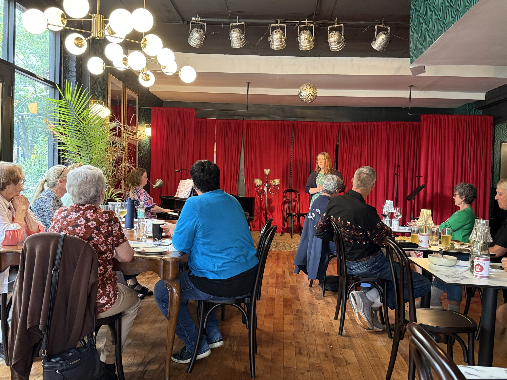
One of my favorite classic spots in the Gold Coast is Butch McGuire’s, a classic pub since 1961, at 20 W. Division St. In October 2025, they opened a sister saloon Mary Jo McGuire’s at 2251 N. Lincoln Ave. in honor of Butch’s wife and longtime business partner. After reading about it, I went for lunch in February. It has a number of dining rooms and an upstairs space where they offer live music and events like Trivia Night during the week. It has a menu of snacks, sides, salads, wraps, burgers, sandwiches and Chicago tavern style pizza. I was impressed with my Butch’s Reuben and a side of coleslaw. It has a great atmosphere and staff.
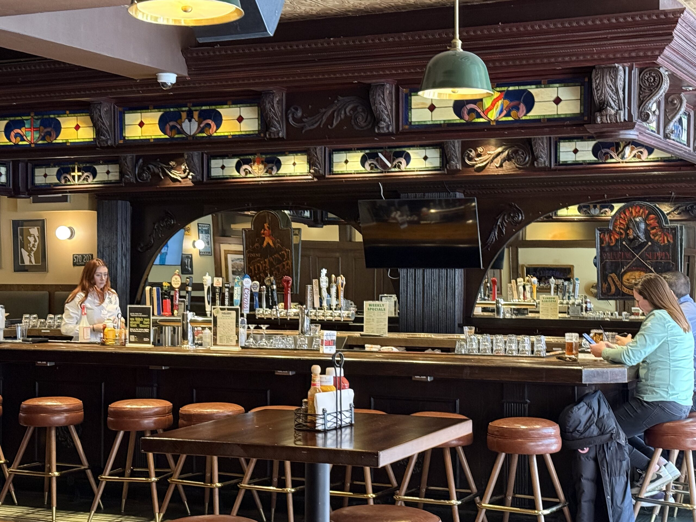
In 2025, Soloway Coffee opened Abrah Bakery & Daily Bistro two doors south at 2269 N. Lincoln. It was high on my list to try, so I went in February 2026 for coffee and a pastry after my lunch at Mary Jo McGuire’s. They are open for breakfast, lunch and dinner. They have coffee, pastries and a large food menu with a blend of American and Ukrainian dishes. They look excellent. I am excited to go back.
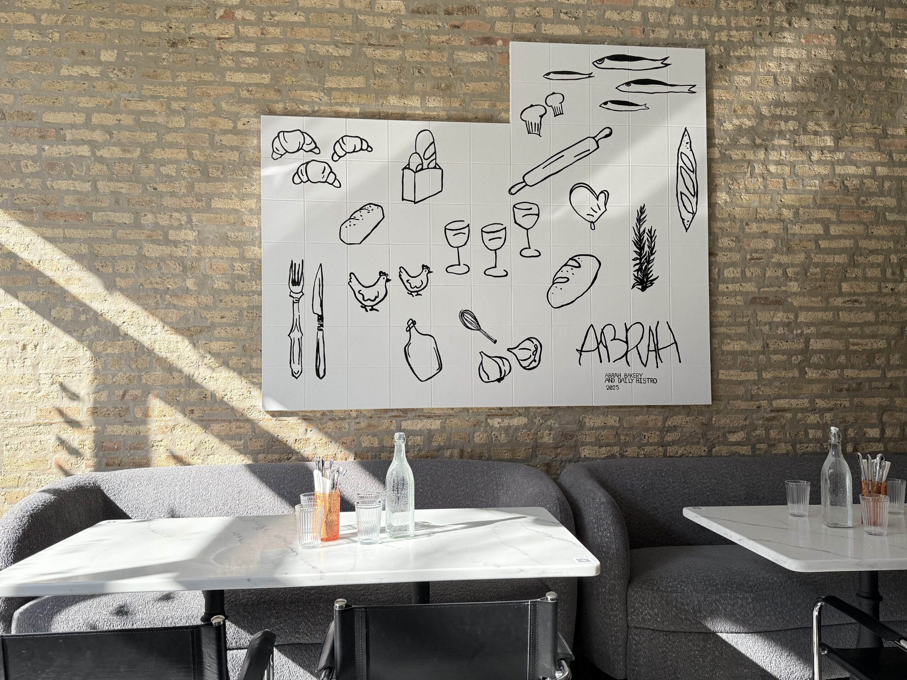
The Belden Stratford is the new location of S.K.Y. restaurant which moved from the Pilsen neighborhood. Officially opened on August 1, 2025, it has an upscale menu of contemporary American cuisine with influences from the owners’ backgrounds in the Philippines and Korea. I went the night before the opening with friends and enjoyed the food, ambiance and the service. I had some tasty Maine lobster dumplings in a jade butter and herb sauce along with the Mediterranean seabass entrée. The crying tiger Brussel sprouts were also good as were the roasted lamb meatballs and the tropical pavlova with pineapple and mango for dessert. The portions are large and are recommended to be shared. 2300 N. Lincoln Park West.
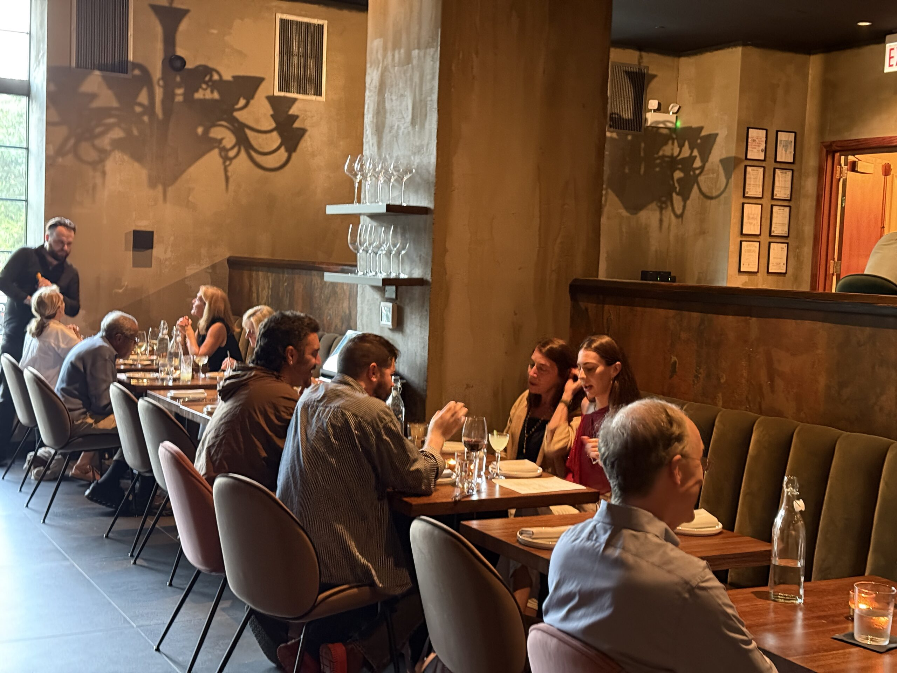
Also in the same building is the newest location of Dollop Coffee that opened in July 2025. After reading about it, I went in February for a great latte. The space is very attractive and the staff very helpful. In addition to coffee and tea drinks they also have pastries and a food menu.
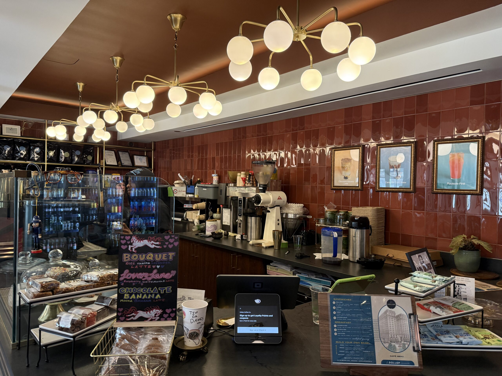
Located at 2723 N. Clark is D Cuisine. This is a neighborhood spot for authentic Hong Kong style dim sum and other Cantonese Chinese specialties. I went for dim sum in February after reading in The Infatuation that it was on the list of The Best Dim Sum Restaurants in Chicago. I enjoyed the steamed BBQ pork buns, the shrimp dumplings and the egg custard tarts for dessert. I recommend the food.
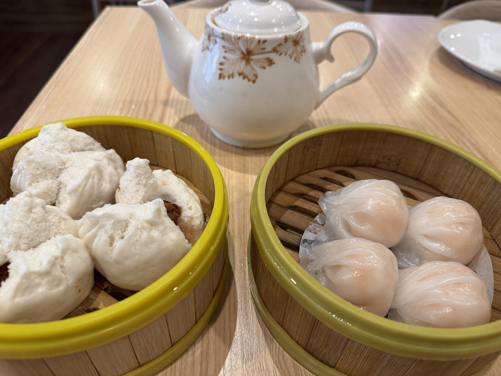
One of my favorite vendors at The Lincoln Park Farmers Market is Anticonquista Café. This is a local coffee roaster with coffee that comes from their family farm in the remote mountains on the border of southeastern Guatemala and southwestern Honduras. It is Chicago’s first family farm-owned and operated coffee roaster headed by Elmer Fajardo Pacheo and Lauren Reese. I am a big fan of their cold brew during the summer months. They opened a permanent cafe in Pilsen in March 2025 at 952 W. 18th St. I was in the neighborhood in February and went for the first time to see Elmer and have a great latte. It has become a popular spot.
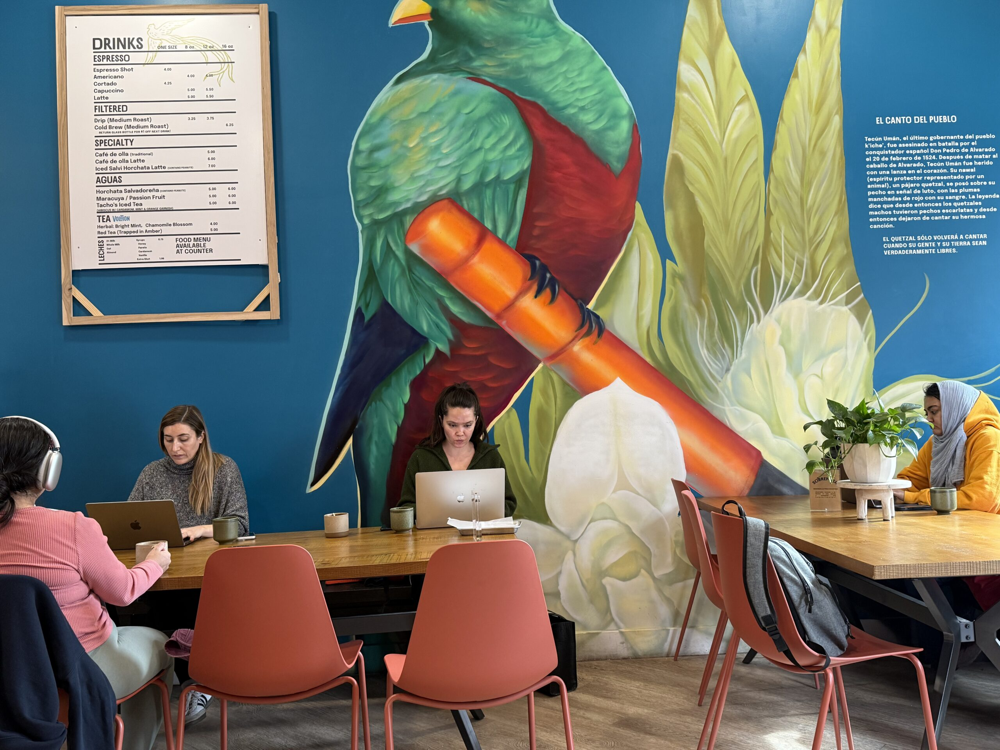
Another popular spot is Nuevo Leon. They have a large menu of Mexican specialties for breakfast, lunch and dinner. I enjoyed their Pilsen location in the past, which did not reopen after a major fire in 2015. I was back in the neighborhood in February and went there for lunch. I had a great experience. I loved the Mexican ambiance and music along with my server and the food. I had the best fish tacos with avocado and crema along with rice and beans. They also brought me some rich rice pudding or arroz con leche with raisins and cinnamon for dessert. The owner was delightful as well. I highly recommend the experience. 3657 W. 26th St.
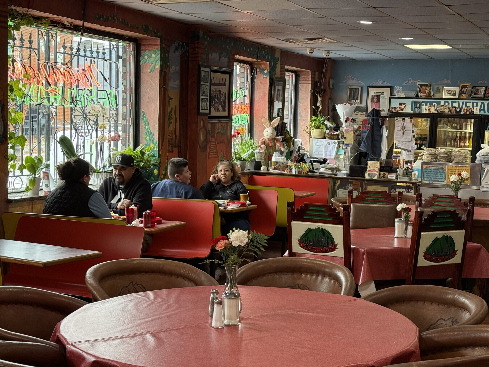
A great Italian spot is Il Milanese Ristorante at 2201 W. Montrose Ave. A local friend had been there several times in the past, so I decided to go with her to try it in February. It was a great choice. It has a large menu of Northern Italian specialties including antipasti, soups, salads, pasta, risotto, entrées and desserts. They also offer daily specials. I chose the roast duck in an orange sauce with risotto and a perfect tiramisu. The food was excellent and I enjoyed the atmosphere and the service. I highly recommend it. One of the owners, Riccardo Michi, also owns Riccardo Trattoria and Riccardo Enoteca, two of my favorites, in Lincoln Park.
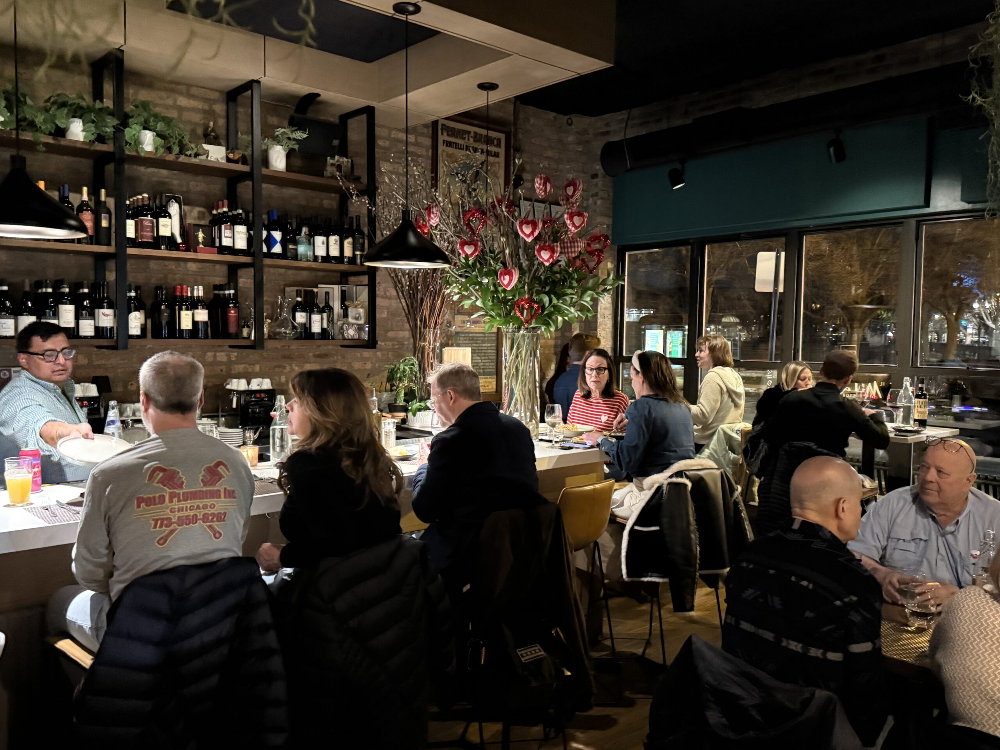
On my recent visit to Little Italy, I enjoyed lunch with a friend at Peanut Park Trattoria. Opened in 2021, they offer a menu of traditional Italian dishes including pasta and pizza. It has been featured in several articles as one of the best Italian restaurants in Chicago. I enjoyed the pappardelle with a bolognese sauce and a perfect tiramisu.
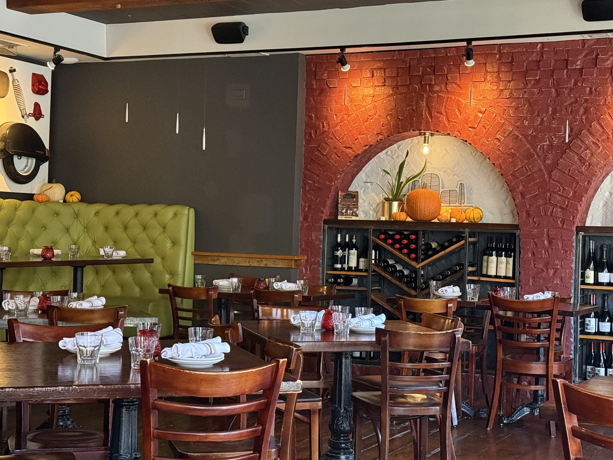
A fun downtown spot in The Loop is the Pittsfield Cafe at 55 E. Washington St. Located in the historic Pittsfield Building from 1927, this is a casual diner open daily for breakfast and lunch. It has a large menu of skillets, omelets, eggs benedicts, burgers, sandwiches and salads. I went in November 2025 before a theater performance and enjoyed the experience and my friendly server. I had a tasty lox gourmet omelet with onions, cream cheese, lox smoked salmon, cucumbers and tomatoes plus hash browns. It is a great location near the theater district, shopping, museums, Millennium Park and N. Michigan Ave.
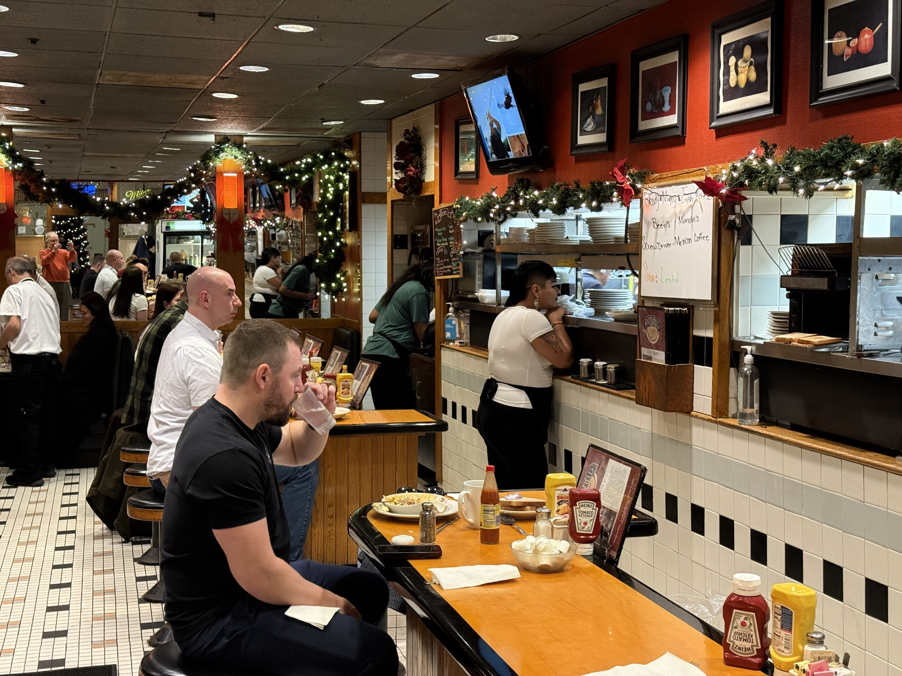
Two blocks north at 185 N. Wabash Ave. at the corner of Lake St. is the Elephant & Castle Chicago – Wabash. This is a traditional English pub and restaurant that is open daily for lunch, dinner and weekend brunch. They have many pub favorites on the menu. I went for the first time in December 2025 for a business lunch and enjoyed the food and the traditional atmosphere. The fish and chips were a great choice. It is close to the River Walk, downtown theaters and Millennium Park. They have another location downtown at 111 W. Adams St. as well as in Boston, MA, Seattle, WA and Washington, DC and in Toronto, Calgary and Winnipeg, Canada.
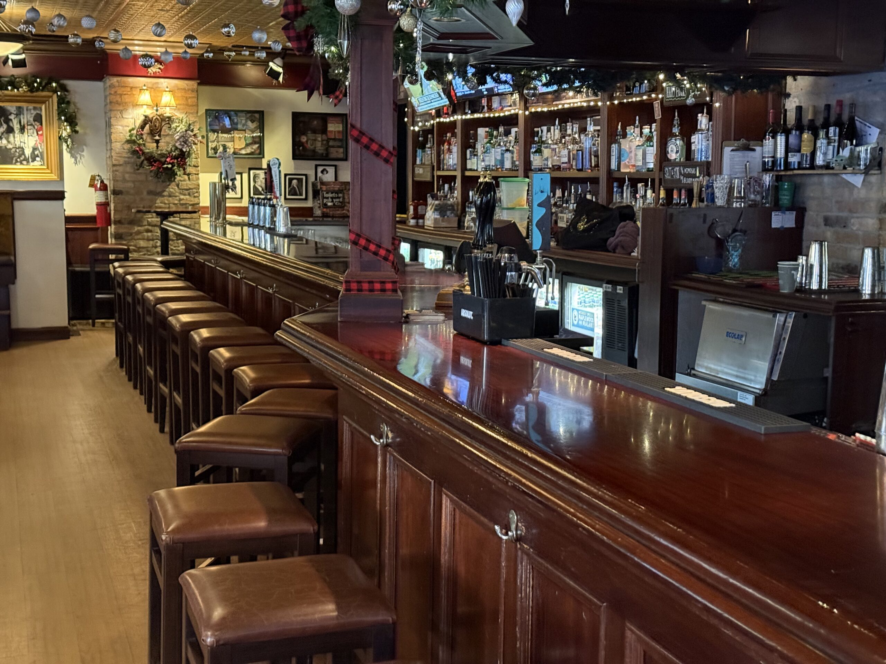
Located in The Drake Hotel is their Cafe on Oak. It is located on the lower level in the former space of the famous Cape Cod Room that operated for 83 years before closing in 2016. This is the hotel’s breakfast restaurant that is open daily. I went for brunch on Sunday and enjoyed a tasty omelette and a latte. The atmosphere is warm and comfortable and the service very good.
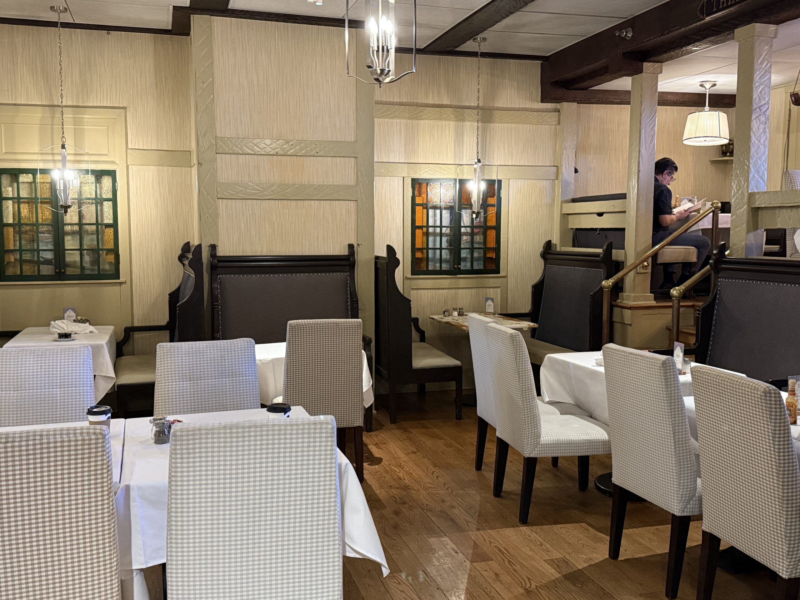
Another new find, the Old Town Pub at 1339 N. Wells. This is a cozy bar that has been open for over 20 years. It is a great spot for food, drinks and watching sports on TV. They have an extensive menu of burgers, sandwiches, soups, salads, tacos, wraps and pizzas. I really enjoyed my pulled pork sandwich with coleslaw. My friends liked the classic BLT sandwich. They also have outdoor patio seating in front.
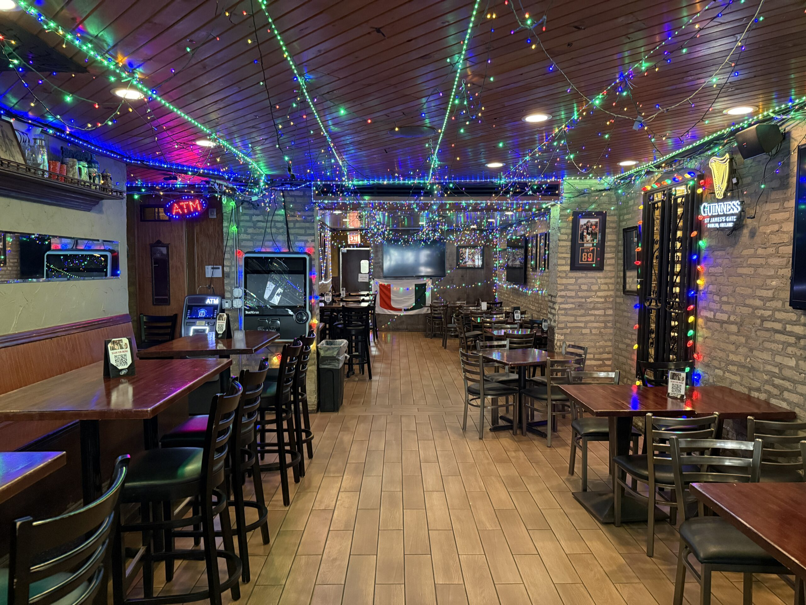
Located in the same building is Gavroche. Opened in October 2024, this is a small, 32-seat restaurant located in a warm, intimate space with a menu of modern French cuisine. Many of the dishes are shareable. I enjoyed my mussels and fries with a taste of two crème brûlées for dessert. My friends enjoyed their entrées as well. I highly recommend making a reservation in advance. The staff was very friendly and helpful. They are open for brunch on Sunday. 1529 N. Wells.
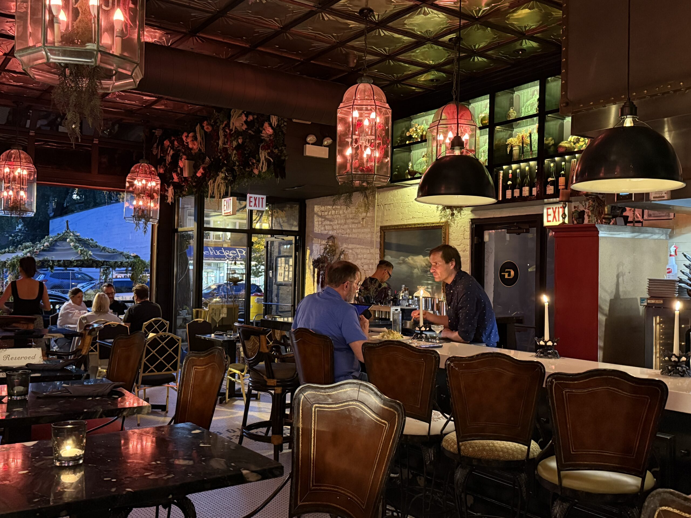
Next to Gavroche at 1527 N. Wells is The VIG – Old Town. This is a 1950’s sport themed bar with a large rustic interior and a large menu of craft beers, cocktails and gastropub food. After walking by several times when it was not open, I went with a neighborhood friend in February for lunch. I liked the casual atmosphere and the fact that we were able to watch some of the Winter Olympic games on TV. I really loved my turkey burger and sweet potato fries.
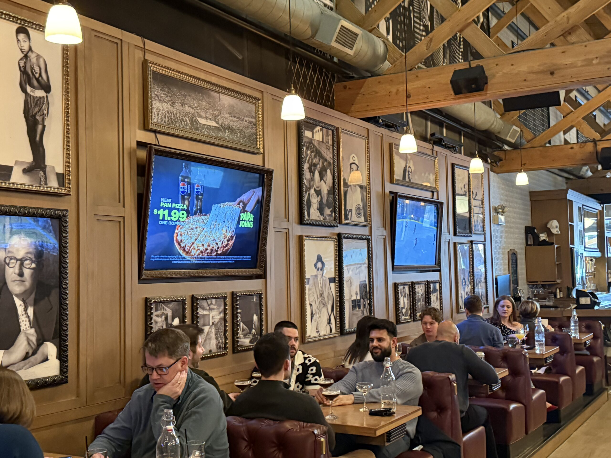
Owned by the same group as Corcoran’s is Moon Star Kitchen & Bar next door at 1617 N. Wells St. Opened in August 2025 this is a stylish gastropub open for drinks and dinner and brunch on weekends. They have a creative menu of cocktails, wine, small bites and shareables. I went for dinner with neighborhood friends and enjoyed the Australian wagyu steak sliders with bourbon caramelized onions, arugula and tomato jam along with one of their signature cocktails, the Moon Star Maple Old Fashioned made with WhistlePig PiggyBack Rye Whiskey, WhistlePig Barrel Aged Maple Syrup, angostura bitters and a black cherry. They also have a large outdoor patio in back for the warmer months.
Up the street at 1647 N. Wells is the recently opened Wells Street Kitchen & Juice. This is a small neighborhood café featuring sandwiches, smoothies, salads and toasts. I went with Classic Chicago’s Editor Judy Bross who highly recommended it and another friend. I enjoyed a great sandwich, the Power Femme Sandwich made with creamy brie, fig jam, green apples, shallots, and arugula. It is made with great baguettes from La Fournette down the street. The grilled cheese sandwich is also great according to my friends. It was a great pleasure meeting Steven the owner. I hope you go and support this small, local black-owned business.
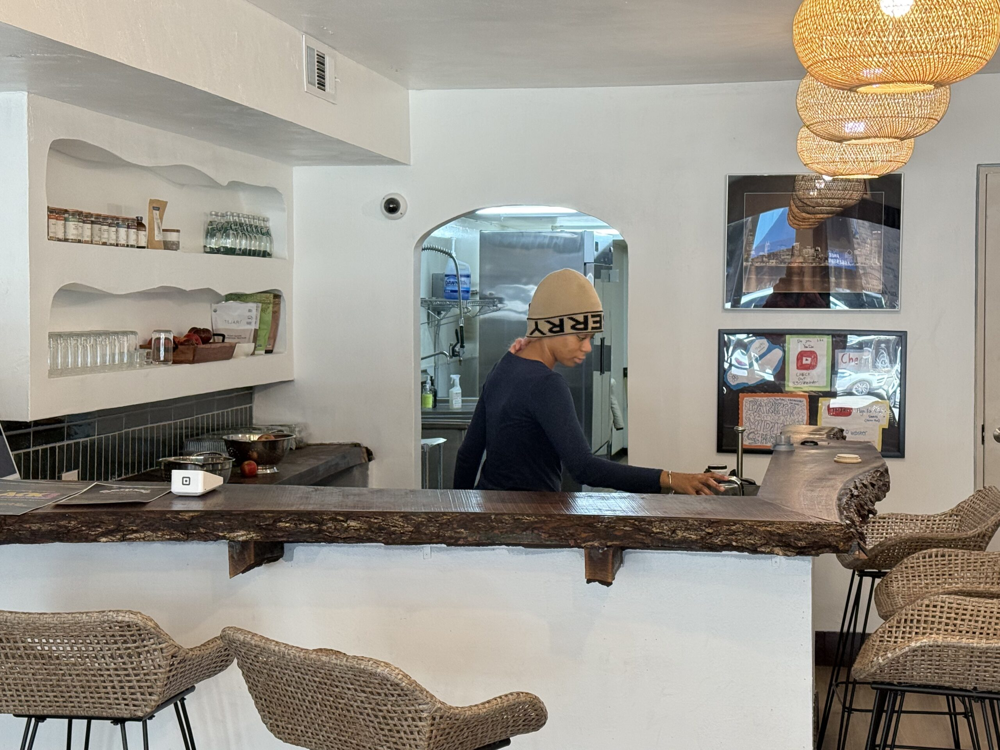
Last weekend before a performance of Burt Bacharach music at the Apollo Theater Chicago, I went for lunch nearby at Prost! at 2566 N. Lincoln Ave. This is a German beer hall serving traditional German cuisine along with steins of beer, schnapps and cocktails. They also feature sports on TV. The menu includes pretzels, wurst, schnitzel, appetizers and sandwiches. I enjoyed the atmosphere and my corned beef sandwich with hot German potato salad and an apple strudel for dessert. It is a great spot to go before or after a performance at the Apollo.
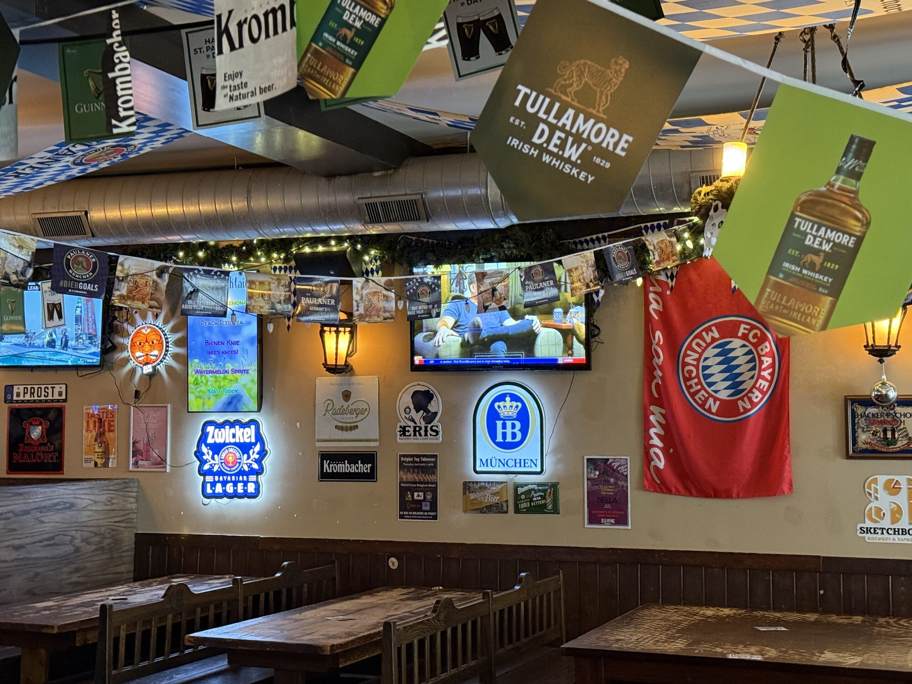
I hope you enjoy my recommendations. I have many more to try.
For more travel information about Chicago and other locations, please visit Globalphile.com.